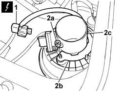

1056B10 AIR FLOW METER - R.R.
- Path
- Procedures > 10 ENGINE > 1056 PETROL FUEL INJECTION SYSTEM > 1056B MULTI-POINT INJECTION SYSTEM (MPI) > 1056B10 AIR FLOW METER - R.R.
- Kind
- repair procedure (removal / refitting; the operation number is the code)
- Applies to
- engines: 2.0 TB, 2.4 20V; all production periods
- Interactive page
- https://sloeber94.github.io/elrnDB-lThss/en/#/93552
Applies to: engines: 2.0 TB, 2.4 20V; all production periods
 Removing
Removing
 Refitting
Refitting- Make sure that the ignition key is in the OFF position, then disconnect the negative battery terminal.
See in Op. 7040D50 ENGINE COMPARTMENT UPPER SOUND INSULATION SHIELD - R.R.
Applies to: engines: 2.4 20V; all production periods
See in Op. 1048A28 vacuum air circuit resonator pipe - r+r
See in Op. 1048A21 AIR INLET HOSE FROM INTAKE TO FILTER - R.R.
Applies to: engines: 2.0 TB; all production periods
See in Op. 1048A28 vacuum air circuit resonator pipe - r+r
See in Op. 1048A21 AIR INLET HOSE FROM INTAKE TO FILTER - R.R.
Applies to: engines: 2.0 TB, 2.4 20V; all production periods
1. Disconnect the electrical connection from the air flow meter.
2. Undo the nuts (2a) and remove the plates (2b) and the air flow meter (2c).

Applies to: engines: 2.0 TB, 2.4 20V; all production periods
Refitting
Removing- Thoroughly clean the air flow meter and the areas connected with the air filter casing in order to prevent any dirty air from passing through.
- Place the air flow meter in its housing and secure it using the plates and the nuts.
- Connect the electrical connection to the air flow meter.
Applies to: engines: 2.4 20V; all production periods
See in Op. 1048A35 HOSE FROM FLOW METER TO RESONATOR - R.R.
See in Op. 1048A21 AIR INLET HOSE FROM INTAKE TO FILTER - R.R.
Applies to: engines: 2.0 TB; all production periods
See in Op. 1048A50 air inlet pipe to turbocharger - r + r
See in Op. 1048A21 AIR INLET HOSE FROM INTAKE TO FILTER - R.R.
Applies to: engines: 2.0 TB, 2.4 20V; all production periods
See in Op. 7040D50 ENGINE COMPARTMENT UPPER SOUND INSULATION SHIELD - R.R.
- Connect the negative battery lead.